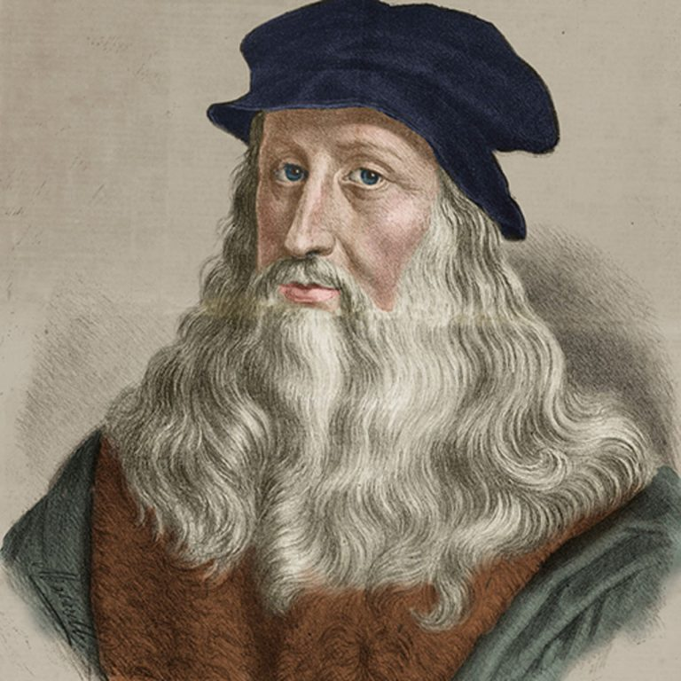
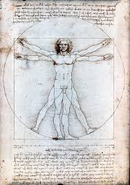
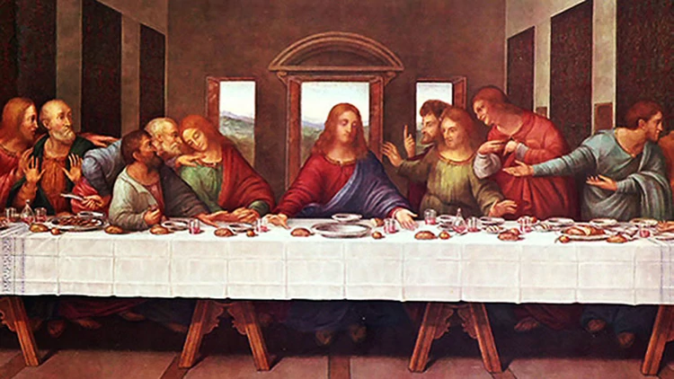
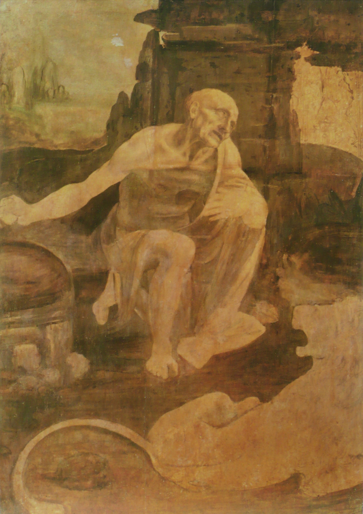
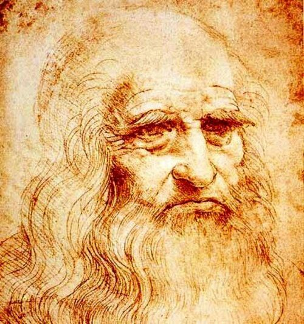

Leonardo da Vinci (Leonardo di ser Piero da Vinci) (Vinci, 15 de abril de 1452, 2 de mayo de 1519) fue un polímata florentino del Renacimiento italiano. Fue a la vez pintor, anatomista, arquitecto, paleontólogo,3 artista, botánico, científico, escritor, escultor, filósofo, ingeniero, inventor, músico, poeta y urbanista. Murió acompañado de Francesco Melzi,4 a quien legó sus proyectos, diseños y pinturas.2 Tras pasar su infancia en su ciudad natal, Leonardo estudió con el pintor florentino Andrea de Verrocchio. Sus primeros trabajos de importancia fueron creados en Milán al servicio del duque Ludovico Sforza. Trabajó a continuación en Roma, Bolonia y Venecia, y pasó sus últimos años en Francia, por invitación del rey Francisco I. 
La Gioconda |
 |
|---|---|
|  | Hombre de Vitruvio |
La última cena |
 |
|  | San Jerónimo |
Autorretrato |
 |